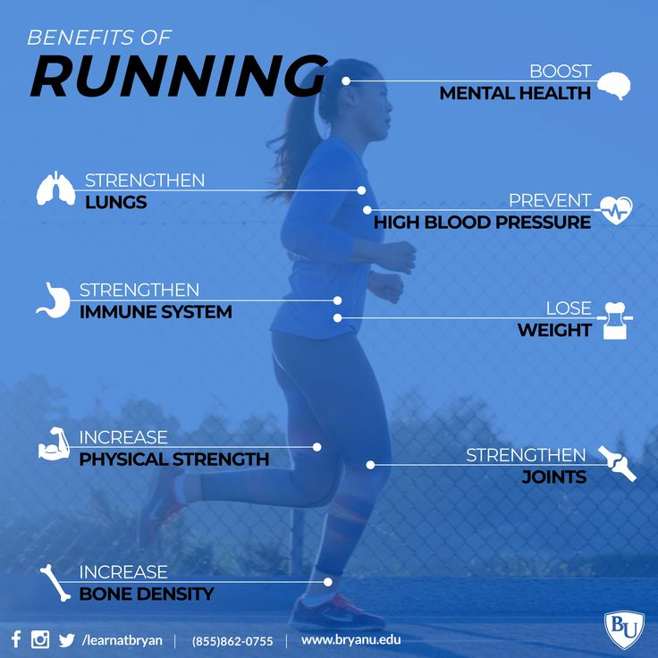

Running is one of the best ways to get fit, relieve stress, and improve overall health.
Whether you're a beginner or an experienced runner, this website will provide you with valuable tips,
benefits, and motivation to keep moving forward!
The Benefits of Running
Improves cardiovascular health
Strengthens bones and muscles
Boosts mood and reduces stress
Aids in weight loss and maintains a healthy weight
Enhances lung capacity
Improves endurance and stamina
Helps regulate blood sugar levels
Reduces risk of chronic diseases
Improves sleep quality
Enhances mental clarity and focus
Increases energy levels
Strengthens the immune system
Enhances flexibility and mobility
Improves balance and coordination
Reduces symptoms of anxiety and depression
Promotes healthy digestion
Increases circulation and blood flow
Helps maintain healthy cholesterol levels
Reduces inflammation in the body
Promotes a longer, healthier life

Running Tips for Beginners
Start slow: Gradually increase your distance and speed.
Wear the right shoes: Proper running shoes are crucial for preventing injuries.
Stay hydrated: Drink plenty of water before, during, and after your run.
Warm up and cool down: Stretching before and after your run helps avoid injuries.
Set realistic goals: Track your progress and celebrate small victories.